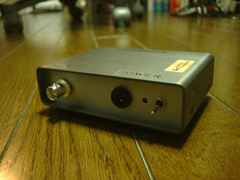
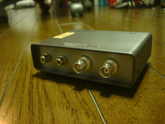
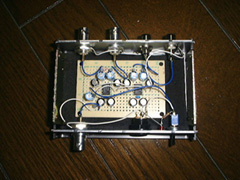

修論で使用するパターン認識ボードには、ビデオカメラ等の映像を入力しますが、 この映像に施す前処理の前後を比較する目的で作った4chのビデオ信号分配器です。 回路はほとんど「SVD-28M」と同等で、ビデオアンプには 新日本無線のNJM2267を使用しました。 コネクタにBNCを使用しているのは、使用するモニタ側がBNCなので、接続を簡単にする ためです。今回、画質や信号の精度はそれほど重要ではないので、中の配線は手を 抜いています。
ｂｙ すすたわり

